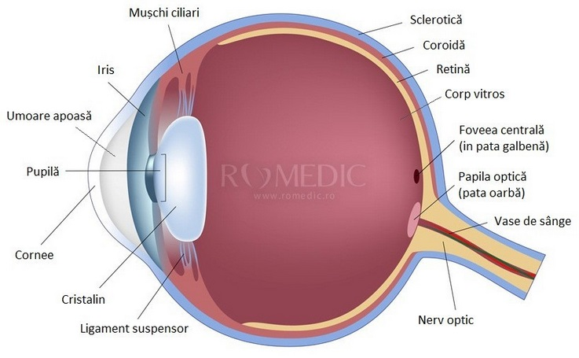

Ochiul (analizatorul vizual)
Ochii sunt, fără doar şi poate, cele mai delicate structuri din organismul uman şi poate cele mai uimitoare. Ei reprezintă fereastra prin intermediul căreia vedem lumea înconjurătoare, fiind responsabili de toate informaţiile pe care creierul nostru le primeşte, motiv pentru care analizatorul vizual este analizatorul pe care ne bazăm cel mai mult.
Anatomia şi structura ochiului
Globul ocular este organul ce asigură funcţia vizuală, fiind un organ neuro-senzorial, cu formă sferică. Prezintă o parte anterioară ce este transparentă şi poartă denumirea de cornee. Globul ocular are un diametru antero-posterior de 21-26 de mm la emetropi, pe când la hipermetropi axul este mai mic, iar la miopi axul este mai mare.
Globul ocular - anatomie
Având o formă sferică, acesta prezintă ca orice sferă:
-
un pol anterior denumit şi extremitatea anterioară a globului ocular;v
-
un pol posterior denumit şi extremitatea posterioară a globului ocular;
un ecuator situat la distanţă egală între cei doi poli;
meridiane.
Toate aceste repere au un rol esenţial în localizarea diverselor patologii ale globului ocular.
Structura globului ocular este reprezentată de pereţii globului ocular şi mediile transparente, refringente.
Pereţii globului ocular sunt constituiţi din 3 tunici concentrice:
sclerocorneea ce mai este denumită şi tunica externă fibroasă
uveea ce mai este denumită tunica mijlocie vasculară ce este alcătuită din 3 elemente: iris, corp ciliar şi coroidă.
retina sau tunica internă nervoasă